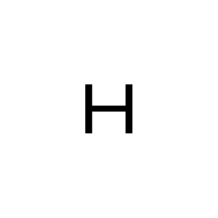

harm van den dorpel

his broad practice includes the creation of sculpture, collage, computer animation, computer generated graphics and interaction design.
harm van den Dorpel, born in 1981 in the Netherlands, is a Berlin-based conceptual artist. His work has been exhibited internationally in Germany, the United States, Italy, United Kingdom and the Netherlands.


